Curso Taller Día 2
CIP Puno - Cap. Ingeniería Agrícola - Facultad de Ingeniería del Agua y Gestión de Recursos Hídricos - IICTA-FIA
01
Series areales de la cuenca, índices de extremos (ETCCDI) y tendencias (Mann-Kendall y pendiente de Sen)
Los servicios climáticos consisten en la generación, traducción y entrega de información científica sobre el clima (pasado, presente y futuro) en un formato práctico y comprensible. Su objetivo es ayudar a personas, empresas y gobiernos a tomar mejores decisiones para reducir riesgos y aprovechar oportunidades frente a las condiciones del clima.
El cambio climático es la variación a largo plazo de las temperaturas y los patrones habituales del clima en la Tierra. Aunque puede tener causas naturales, desde el siglo XIX se debe principalmente a las actividades humanas (como la quema de combustibles fósiles y la deforestación), que aumentan los gases de efecto invernadero y provocan el calentamiento global.
# Precipitación (PISCOp v3, 1981–2025) y temperatura (PISCO, 1981–2020)
# por subcuenca -> cuenca: promedio ponderado por área
serie_cuenca <- function(archivo, nombre) {
read_csv(archivo) |>
pivot_longer(-Date, names_to = "subcuenca", values_to = "valor") |>
mutate(subcuenca = parse_number(subcuenca)) |>
left_join(areas, by = "subcuenca") |>
group_by(fecha = Date) |>
summarise({{ nombre }} := weighted.mean(valor, area_km2))
}Las llaves dobles alrededor de nombre y el operador := usan el nombre que le pasamos (pp, tmax, tmin) como nombre de la columna nueva.
| Índice | Definición | Unidad |
|---|---|---|
| PRCPTOT | Lluvia total anual en días húmedos (≥ 1 mm) | mm |
| Rx1day / Rx5day | Máxima lluvia en 1 día / en 5 días seguidos | mm |
| SDII | Intensidad: lluvia por día húmedo | mm/día |
| R10mm | Días con lluvia ≥ 10 mm | días |
| CDD / CWD | Racha seca (< 1 mm) / húmeda (≥ 1 mm) más larga | días |
| TX / TN | Tmax / Tmin media anual | °C |
| TXx / TNn | Tmax más alta / Tmin más baja del año | °C |
| FD | Días con helada (Tmin < 0 °C) | días |
| DTR | Rango térmico diario medio (Tmax − Tmin) | °C |
Expert Team on Climate Change Detection and Indices (ETCCDI): 27 índices estándar para comparar regiones y estudios.
summarise()indices_pp <- clima |>
group_by(anio = year(fecha)) |>
summarise(PRCPTOT = sum(pp[pp >= 1]),
Rx1day = max(pp),
Rx5day = max(zoo::rollsum(pp, 5)),
CDD = racha_max(pp < 1),
CWD = racha_max(pp >= 1))
indices_t <- clima |>
filter(year(fecha) <= 2020) |>
group_by(anio = year(fecha)) |>
summarise(TX = mean(tmax), TN = mean(tmin),
FD = sum(tmin < 0)) # días con heladaAnomalía = valor del año − media de la normal 1991–2020. De 2013 a 2020 todos los años tienen Tmax sobre la normal. 1983, 1998 y 2016 coinciden con eventos El Niño.
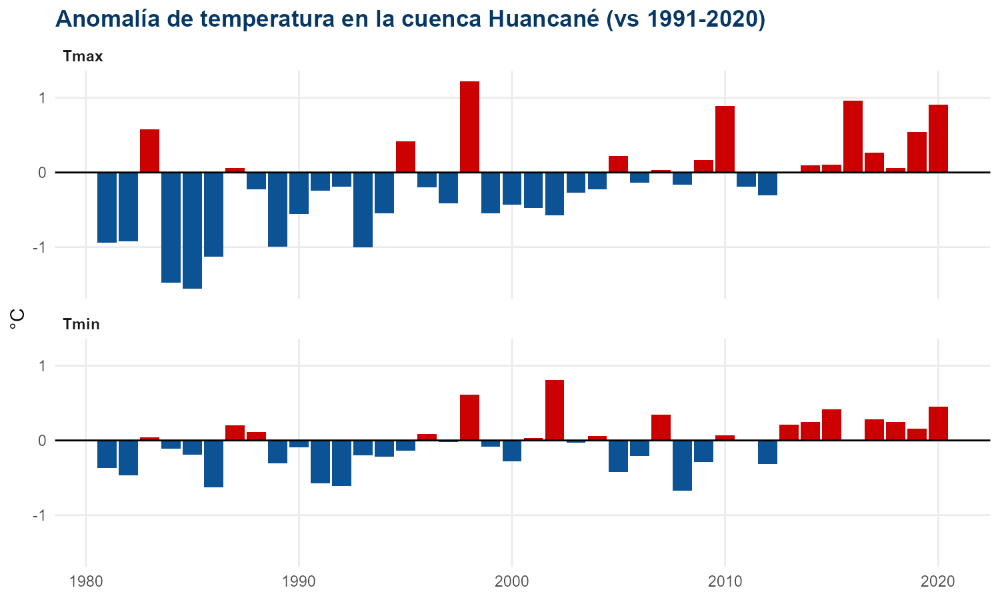
Mann-Kendall: prueba no paramétrica, no supone normalidad. Sen: mediana de las pendientes entre todos los pares de años, robusta a valores extremos. Tmax sube +0.35 °C por década.
map()| Índice | Sen /década | p (MMK) |
|---|---|---|
| PRCPTOT | −6.6 mm | 0.66 |
| Rx1day | +0.3 mm | 0.48 |
| CDD | +2.3 días | 0.42 |
| TX | +0.35 °C | < 0.001 |
| TN | +0.14 °C | 0.004 |
| TXx | +0.48 °C | < 0.001 |
| FD | −4.5 días | 0.015 |
| DTR | +0.18 °C | 0.002 |
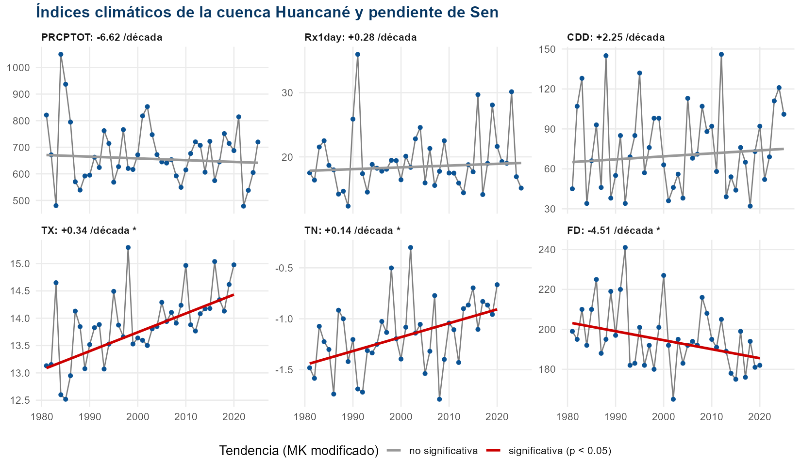
La precipitación no muestra tendencia significativa (1981–2025). La temperatura sí: la cuenca se calienta y pierde ~4.5 días de helada por década (1981–2020). Tmax sube más rápido que Tmin, por eso el rango térmico (DTR) aumenta.
02
CMIP6, escenarios SSP, ensambles de modelos y horizontes temporales
CMIP6 (Coupled Model Intercomparison Project, fase 6)
Eyring et al. (2016). Overview of the Coupled Model Intercomparison Project Phase 6 (CMIP6). Geoscientific Model Development, 9, 1937–1958.
| Escenario | Narrativa socioeconómica | Forzamiento 2100 |
|---|---|---|
| SSP1-2.6 | Sostenibilidad: cooperación, energía limpia | 2.6 W/m² |
| SSP2-4.5 | Camino intermedio: las tendencias actuales continúan | 4.5 W/m² |
| SSP3-7.0 | Rivalidad regional: poca cooperación, alto crecimiento poblacional | 7.0 W/m² |
| SSP5-8.5 | Desarrollo basado en combustibles fósiles | 8.5 W/m² |
SSP (Shared Socioeconomic Pathway) describe cómo evoluciona la sociedad; el número es el forzamiento radiativo al 2100, que resume cuánto se calienta el planeta. En el curso usamos SSP2-4.5 por tiempo: es el escenario intermedio y el más usado en estudios de adaptación.
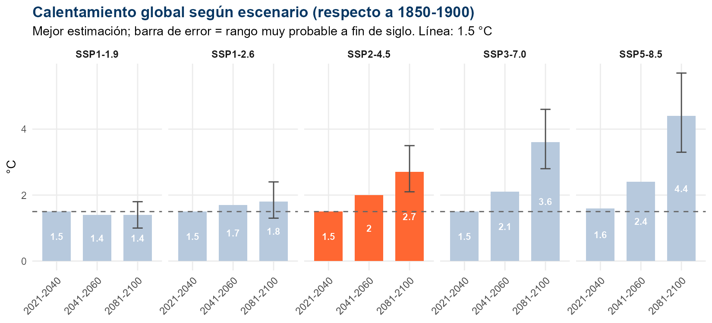
Hasta 2040 todos los escenarios llegan a ~1.5 °C: la diferencia entre escenarios aparece después de 2050. IPCC (2021), AR6 WG1, Resumen para responsables de políticas, Tabla SPM.1.
NEX-GDDP-CMIP6 (NASA)
NASA/GDDP-CMIP6.Thrasher et al. (2022). NASA Global Daily Downscaled Projections, CMIP6. Scientific Data, 9, 262.
Tres fuentes de incertidumbre
| Fuente | Cómo se aborda |
|---|---|
| Escenario | Varios SSP |
| Modelo | Varios GCM (ensamble) |
| Variabilidad natural | Periodos de 30 años |
Ensamble del curso (SSP2-4.5)
| Modelo | Centro (país) |
|---|---|
| ACCESS‑CM2 | CSIRO-ARCCSS (Australia) |
| MIROC6 | JAMSTEC / AORI / NIES (Japón) |
| MPI‑ESM1‑2‑HR | Max Planck (Alemania) |
Cada modelo representa de forma distinta los procesos físicos: su dispersión es una medida de la incertidumbre. Tres modelos es un mínimo didáctico; los estudios usan 5 a 10 o más. Hawkins y Sutton (2009), Bulletin of the American Meteorological Society, 90, 1095–1108.
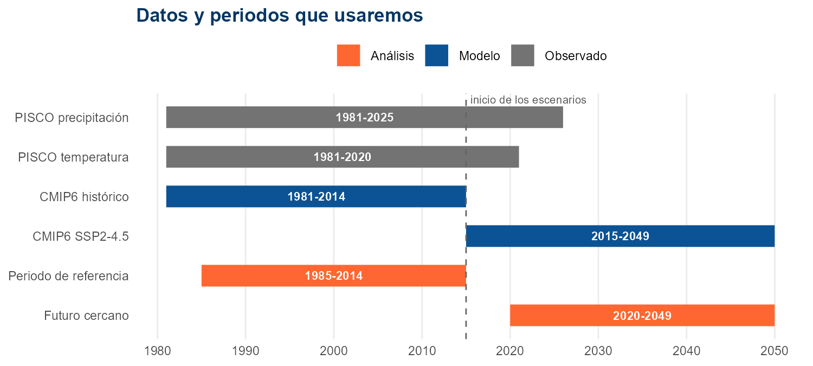
Referencia 1985–2014: los últimos 30 años del histórico de CMIP6, que también cubren PISCO. Futuro cercano 2020–2049: el horizonte útil para planificar obras y adaptación. Cambio = futuro − referencia, del mismo modelo.
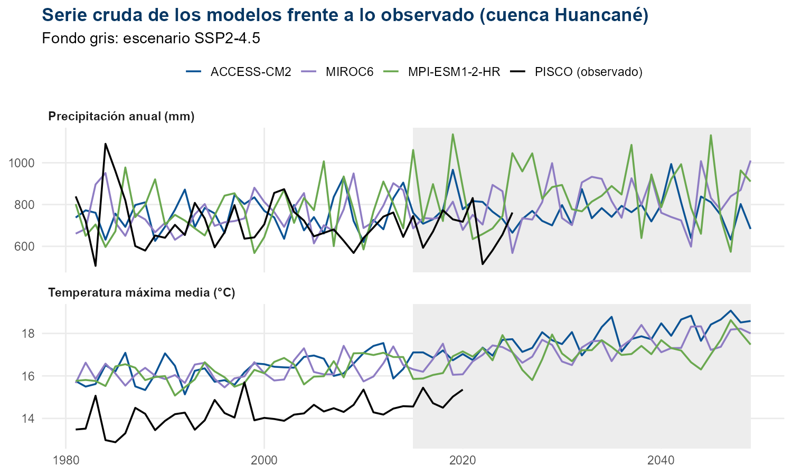
En 1985–2014 los modelos dan una Tmax ~2 °C más alta y una lluvia 6–10 % mayor que PISCO. Tampoco reproducen años concretos (1983 seco, 1984 húmedo), y no deben hacerlo. Antes de usarlos hay que corregir el sesgo.
03
Descarga en Google Earth Engine, mapeo de cuantiles (qmap) vs. método delta y señales de cambio
var coleccion = ee.ImageCollection(
'NASA/GDDP-CMIP6')
.filter(ee.Filter.eq('model', modelo))
.filter(ee.Filter.inList('scenario',
['historical', 'ssp245']))
.filterDate('1981-01-01', '2050-01-01')
.select(['pr', 'tasmax', 'tasmin'])
.map(convertir); // a mm/día y °C
// Promedio de cada día en cada subcuenca
img.reduceRegions({
collection: cuenca.select(['Subbasin']),
reducer: ee.Reducer.mean(),
scale: 1000
});
Export.table.toDrive({ ... fileFormat: 'CSV' });ejercicios/Descarga_CMIP6_GEE.js, se ejecuta en code.earthengine.google.com.El campo de la subcuenca (Subbasin) debe existir en el asset: si el nombre no coincide, la columna llega vacía y sin error.
archivos <- list.files("data/cmip6", pattern = "ssp245\\.csv$",
full.names = TRUE)
cmip <- archivos |>
map(\(f) read_csv(f, show_col_types = FALSE)) |>
list_rbind() |>
transmute(fecha = Fecha, subcuenca = Subcuenca, modelo = Modelo,
pp = Pr_mm, tmax = Tmax, tmin = Tmin)
count(cmip, modelo)
#> ACCESS-CM2 126010
#> MIROC6 126010
#> MPI-ESM1-2-HR 126010 (5 subcuencas x 25202 días)map() + list_rbind(): el mismo patrón del Día 1 para leer varias estaciones.
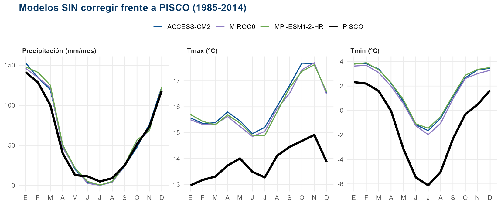
Sesgo anual de la cuenca, 1985–2014: lluvia +4.6 a +7.6 %, Tmax +2.1 a +2.2 °C y Tmin +2.7 a +3.0 °C. La lluvia tiene la forma correcta; la temperatura está desplazada en todos los meses, más en la Tmin del invierno.
| Método delta | Mapeo de cuantiles | |
|---|---|---|
| Qué usa del modelo | Solo el cambio entre sus periodos | Toda la serie diaria |
| Serie futura | Lo observado, perturbado mes a mes | El modelo corregido |
| Corrige | La media mensual | Toda la distribución (medias, extremos, días secos) |
| Variabilidad futura | La misma de 1985–2014 | La del modelo |
| Ventaja | Simple, robusto | Conserva la secuencia de años del modelo |
Delta: Pfut = Pobs × (Pmod,fut / Pmod,ref) y Tfut = Tobs + (Tmod,fut − Tmod,ref), para cada mes y subcuenca.
deltas <- inner_join(regimen(cmip, ref, cuenca = FALSE),
regimen(cmip, fut, cuenca = FALSE),
by = c("modelo", "subcuenca", "mes"),
suffix = c("_ref", "_fut")) |>
transmute(modelo, subcuenca, mes,
f_pp = pp_fut / pp_ref, # razón
d_tmax = tmax_fut - tmax_ref, # diferencia
d_tmin = tmin_fut - tmin_ref)
#> ACCESS-CM2, subcuenca 1: mes f_pp d_tmax d_tmin
#> 1 1.00 1.61 1.36
#> 3 1.19 1.56 1.23| Media | P95 | Días secos | |
|---|---|---|---|
| PISCO | 4.52 | 12.3 | 3.8 % |
| Modelo | 5.04 | 11.8 | 5.5 % |
| Corregido | 4.54 | 12.1 | 4.1 % |
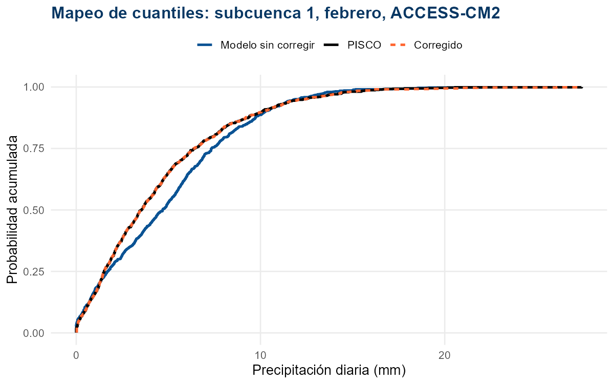
Cada valor del modelo se reemplaza por el valor observado del mismo cuantil. wet.day = TRUE corrige además la frecuencia de días con lluvia. Cargar qmap antes que tidyverse: su dependencia MASS tiene otra select().
nest() y pmap()corregir <- function(o, m, variable) {
m_ref <- m$valor[year(m$fecha) %in% ref] # ajuste en 1985-2014
ajuste <- fitQmap(o$valor, m_ref, method = "QUANT",
wet.day = variable == "pp")
tibble(fecha = m$fecha, valor = doQmap(m$valor, ajuste)) # aplica 1981-2049
}
cmip_qm <- cmip |>
pivot_longer(c(pp, tmax, tmin), names_to = "variable", values_to = "valor") |>
mutate(mes = month(fecha)) |>
nest(m = c(fecha, valor)) |> # 540 grupos
left_join(obs_mes, by = c("subcuenca", "variable", "mes")) |>
mutate(cor = pmap(list(o, m, variable), corregir)) |>
select(modelo, subcuenca, variable, cor) |>
unnest(cor) |>
pivot_wider(names_from = variable, values_from = valor)3 modelos × 5 subcuencas × 3 variables × 12 meses = 540 ajustes en ~20 segundos. Control: ningún día con Tmin ≥ Tmax.
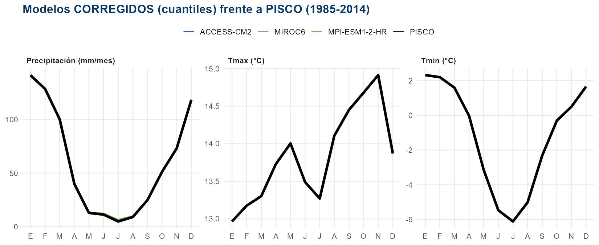
Después de corregir, los tres modelos reproducen el régimen de PISCO en 1985–2014: lluvia 720–723 mm (PISCO 716), Tmax 13.8 °C y Tmin −1.2 °C. Las líneas quedan una sobre otra.
| Variable | Método | ACCESS-CM2 | MIROC6 | MPI-ESM1-2-HR |
|---|---|---|---|---|
| Lluvia | Sin corregir | +1.2 % | +8.3 % | +9.5 % |
| Delta | +1.2 % | +7.7 % | +9.8 % | |
| Cuantiles | +2.1 % | +6.8 % | +8.2 % | |
| Tmax | Sin corregir y delta | +1.51 °C | +1.15 °C | +0.92 °C |
| Cuantiles | +1.20 °C | +0.85 °C | +0.64 °C | |
| Tmin | Sin corregir y delta | +1.32 °C | +0.91 °C | +0.94 °C |
| Cuantiles | +1.22 °C | +0.95 °C | +0.80 °C |
Los tres modelos coinciden: más calor (+0.6 a +1.5 °C) y algo más de lluvia (+1 a +10 %). El método delta conserva la señal del modelo; el mapeo de cuantiles la modifica, sobre todo en Tmax (ejercicio E3). Ensamble (cuantiles): +5.7 % de lluvia, +0.9 °C Tmax, +1.0 °C Tmin.
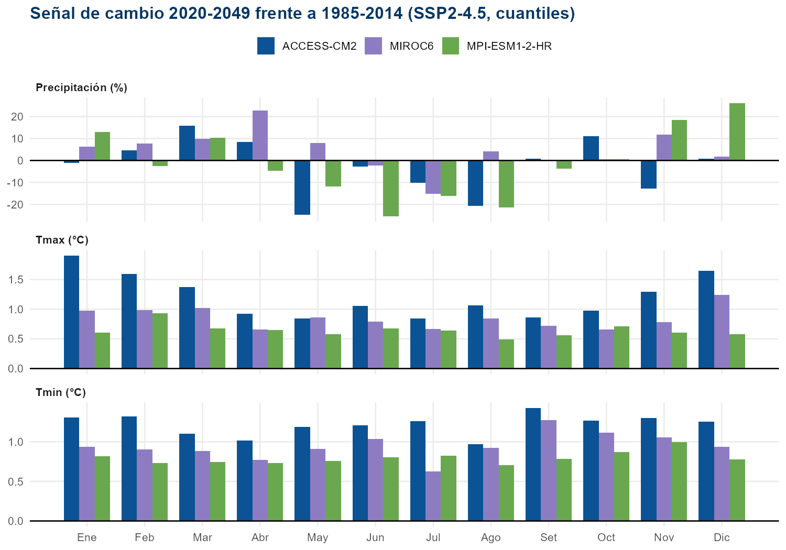
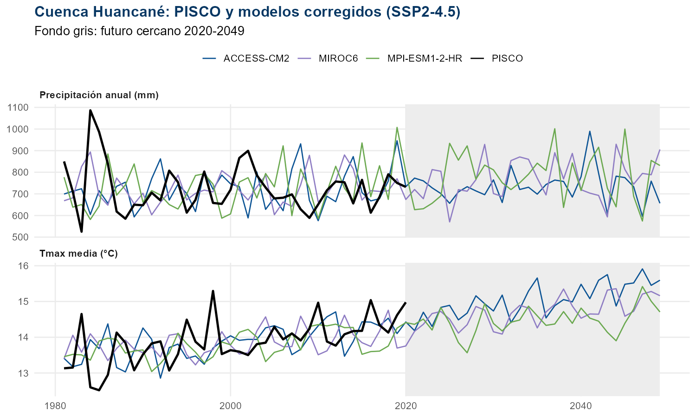
Estas series diarias por subcuenca (data/processed/CMIP6_QM_subcuencas.csv) son la entrada del modelo GR4J en el bloque 05.
04
Modelo GR4J semidistribuido con airGRiwrm: red de subcuencas, calibración y validación
Conceptos generales
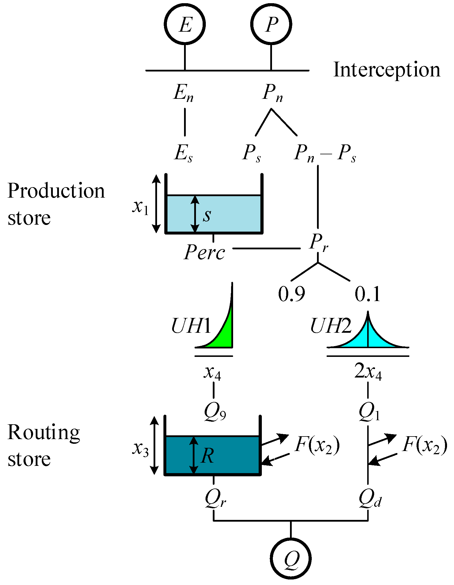
| Parámetro | Qué representa | |
|---|---|---|
| \(X_1\) | Reservorio de producción (mm) | El suelo: reparte la lluvia entre ETP, almacenamiento y percolación. Suelos más profundos → mayor \(X_1\). |
| \(X_2\) | Intercambio subterráneo (mm/día) | \(X_2 < 0\): la cuenca pierde agua hacia el acuífero; \(X_2 > 0\): la gana. |
| \(X_3\) | Reservorio de tránsito (mm) | Retención del agua: controla la recesión y el caudal base. |
| \(X_4\) | Tiempo base del UH1 (días) | Rapidez de la respuesta; UH2 dura \(2X_4\). |
La lluvia efectiva se reparte siempre en 90 % por UH1 hacia el reservorio de tránsito (flujo lento) y 10 % por UH2 directo al río (flujo rápido): ese reparto es fijo, no es un parámetro.
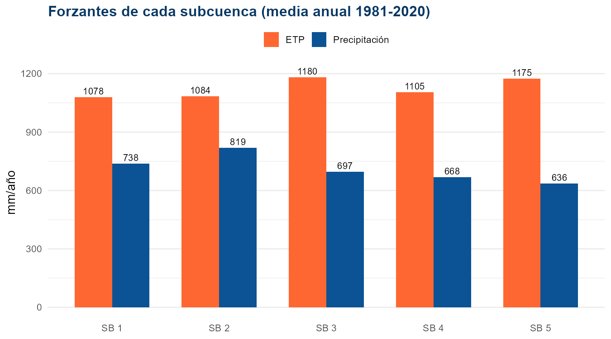
La lluvia cambia entre 636 y 819 mm/año según la subcuenca. Un modelo agregado la promedia; airGRiwrm corre GR4J en cada subcuenca y suma los caudales a lo largo del río. Ejercicio: ejercicios/07_Modelamiento_GR4J.R.
area es el área acumulada en el nodo. Solo la salida tiene estación: las otras 4 subcuencas son Ungauged y heredan los parámetros de la 5.
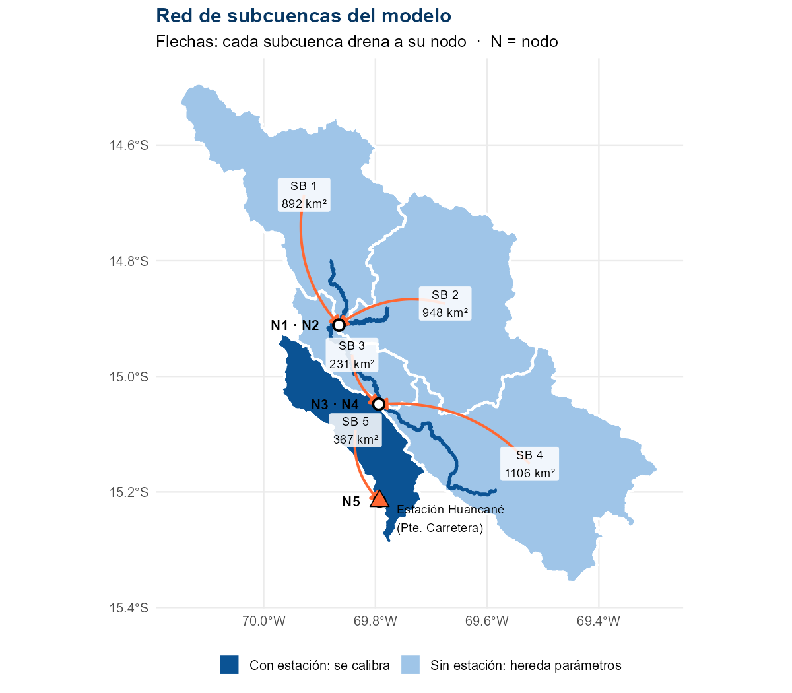
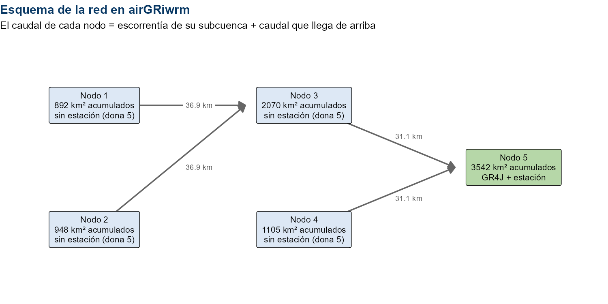
plot(griwrm) dibuja este esquema con el servicio en línea mermaid.ink (requiere internet). En el script lo construimos con ggplot2.
# Una fila por día, una columna por nodo (mismo orden que la red)
P <- a_matriz(forzantes, "pp") #> 14610 x 5 (1981-2020)
ETP <- a_matriz(forzantes, "etp") # Hargreaves, como en el Día 1
# GR4J trabaja en lámina: m³/s -> mm/día
Qobs <- cbind("5" = q_obs$q * 86.4 / area_salida)
InputsModel <- CreateInputsModel(griwrm,
DatesR = as.POSIXct(fechas, tz = "UTC"),
Precip = P,
PotEvap = ETP)| Periodo | Años | Uso |
|---|---|---|
| Calentamiento | 1981–1983 | llenar los reservorios del modelo |
| Calibración | 1984–2004 | ajustar los parámetros |
| Validación | 2005–2019 | evaluar con datos que el modelo no vio |
InputsCrit <- CreateInputsCrit(
InputsModel,
FUN_CRIT = ErrorCrit_KGE2,
RunOptions = RunOptions_cal,
Obs = Qobs[i_cal, , drop = FALSE])
CalibOptions <- CreateCalibOptions(InputsModel)
OutputsCalib <- Calibration(
InputsModel, RunOptions_cal,
InputsCrit, CalibOptions)
#> Crit. KGE2[Q] = 0.8563 (~2 minutos)
Param <- extractParam(OutputsCalib)| Parámetro | Valor |
|---|---|
| X1 (mm) | 47.6 |
| X2 (mm/d) | 0.32 |
| X3 (mm) | 203.5 |
| X4 (d) | 1.64 |
X1 producción, X2 intercambio con acuíferos, X3 tránsito, X4 tiempo base del hidrograma unitario. Las subcuencas sin estación reciben X1–X3 iguales; X4 se ajusta por el área: 1.43 a 2.28 días (Lobligeois, 2014).
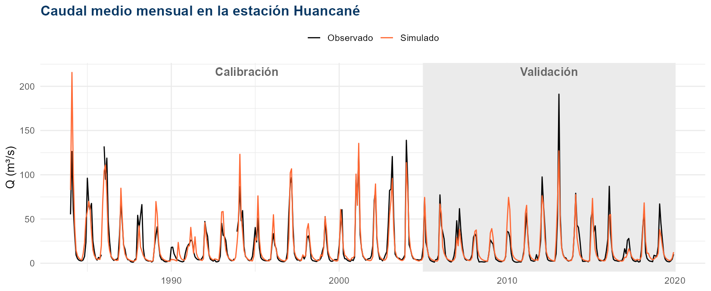
| Periodo | KGE | NSE | r | PBIAS | Q obs (m³/s) | Q sim (m³/s) |
|---|---|---|---|---|---|---|
| Calibración | 0.86 | 0.71 | 0.86 | +0.3 % | 20.2 | 20.2 |
| Validación | 0.81 | 0.76 | 0.87 | −4.1 % | 16.2 | 15.6 |
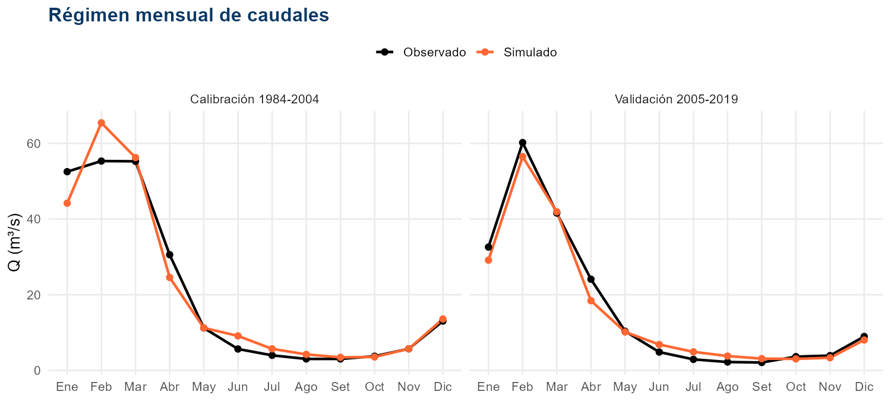
El modelo reproduce la época de lluvias (diciembre a abril) y la recesión. En los meses secos simula algo más de caudal que el observado.
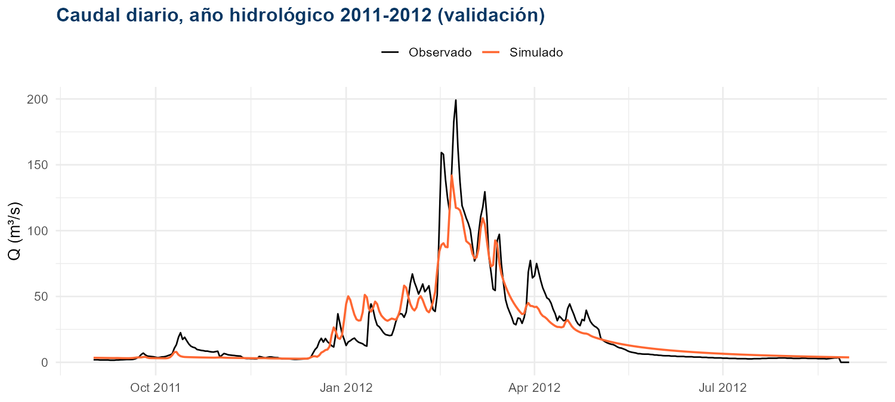
Año hidrológico 2011–2012: el pico de febrero (~200 m³/s) se subestima, pero la forma de la crecida y la recesión siguen bien al caudal observado.
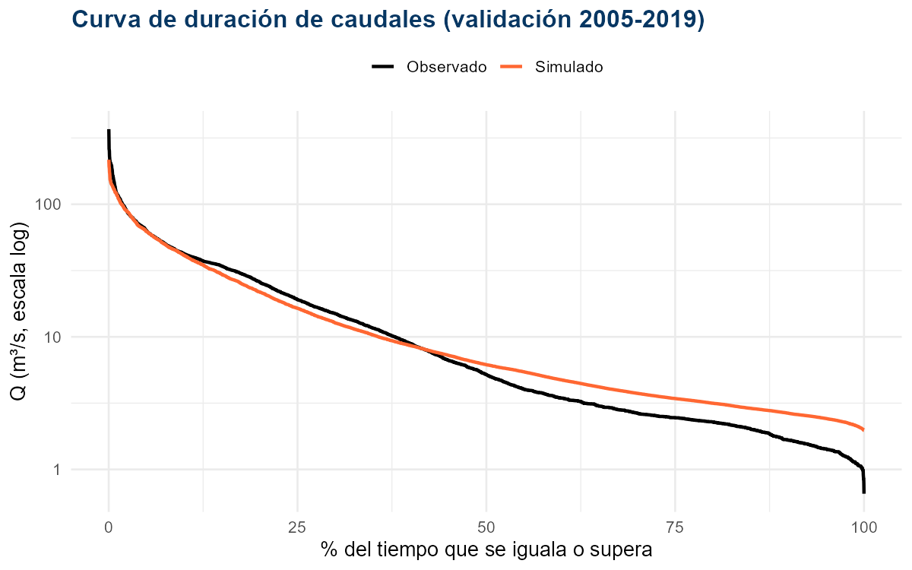
transfo = "sqrt" o "log" en CreateInputsCrit() (ejercicio E2).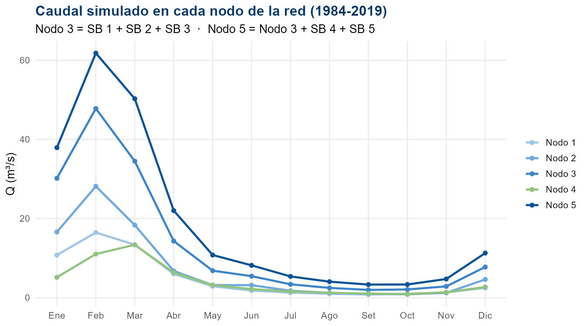
El modelo entrega caudal en todos los nodos, también donde no hay estación. Con airGRiwrm se pueden agregar extracciones de riego, trasvases o embalses en cualquier nodo.
05
Simulación futura (SSP2-4.5) y comparación del régimen de caudales
outputs/modelo_GR4J_Huancane.rds): los parámetros no cambian.Supuesto fuerte: la cuenca responde en el futuro igual que en 1984–2004 (mismos parámetros, mismo uso del suelo). Es la práctica habitual, pero hay que decirlo.
simular <- function(forzantes, anios_warmup = 3) {
f <- forzantes |>
left_join(latitudes, by = "subcuenca") |>
mutate(etp = hargreaves(tmax, tmin, lat, fecha))
# ... matrices de pp y etp con a_matriz() (columnas en el orden de griwrm)
InputsModel <- CreateInputsModel(griwrm, DatesR = fechas,
Precip = a_matriz("pp"),
PotEvap = a_matriz("etp"))
RunOptions <- CreateRunOptions(InputsModel, IndPeriod_WarmUp = ...,
IndPeriod_Run = ...)
salida <- RunModel(InputsModel, RunOptions, Param)
tibble(fecha = ..., q = attr(salida, "Qm3s")[["5"]])
}
q_qm <- cmip_qm |>
nest(forzantes = -modelo) |> # un clima por modelo
mutate(q = map(forzantes, simular)) |>
unnest(q)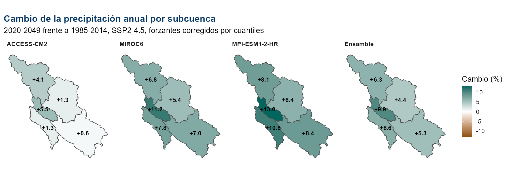
Los tres modelos dan más lluvia en todas las subcuencas, pero con distinta intensidad: de +0.6 % (ACCESS-CM2) a +13 % (MPI-ESM1-2-HR). El mayor aumento está en la subcuenca 3, en el centro de la cuenca.
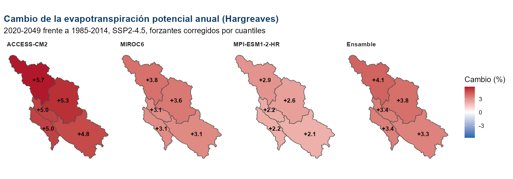
La ETP sube en todos los casos (+2 a +6 %), más en la cabecera (subcuenca 1). El modelo que más calienta (ACCESS-CM2, ETP ~+5 %) es el que menos lluvia agrega (~+1 %): por eso es el único con menos caudal en el futuro.
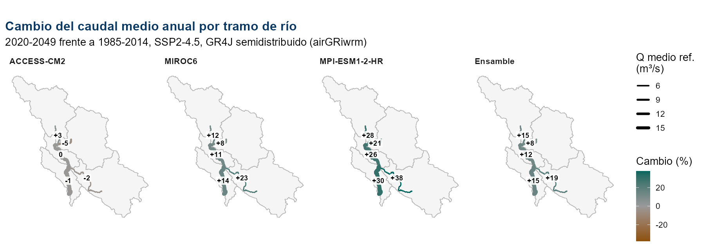
El caudal responde más que la lluvia y no igual en todos los tramos: en el tramo 4 la lluvia sube +7 a +8 % (MIROC6, MPI) y el caudal +23 a +38 %. Con ACCESS-CM2 el tramo 2 pierde caudal (−5 %) porque la ETP (+5 %) crece más que la lluvia (+1 %).
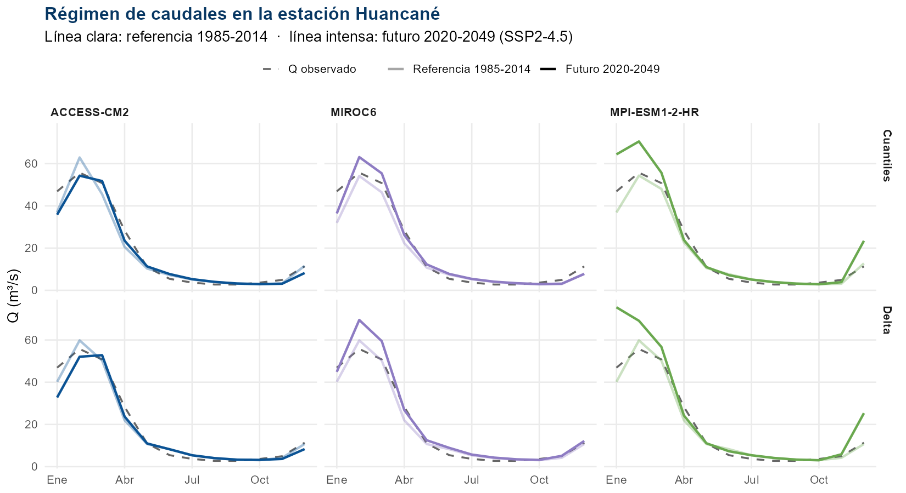
| Modelo | Método | Q medio | Lluvias (dic–mar) | Estiaje (jun–set) |
|---|---|---|---|---|
| ACCESS-CM2 | Cuantiles | −1.1 % | −4.1 % | +3.8 % |
| Delta | −6.1 % | −9.2 % | −0.5 % | |
| MIROC6 | Cuantiles | +14.5 % | +15.8 % | +3.9 % |
| Delta | +15.3 % | +15.5 % | +6.3 % | |
| MPI-ESM1-2-HR | Cuantiles | +30.1 % | +41.2 % | −3.1 % |
| Delta | +31.1 % | +41.6 % | −4.2 % |
Lluvia +1 a +10 % → caudal −6 a +31 %: el caudal amplifica el cambio de la lluvia, y más calor (más ETP) no alcanza a compensarlo. Los dos métodos dan el mismo orden de magnitud; la diferencia entre modelos es mucho mayor que la diferencia entre métodos.
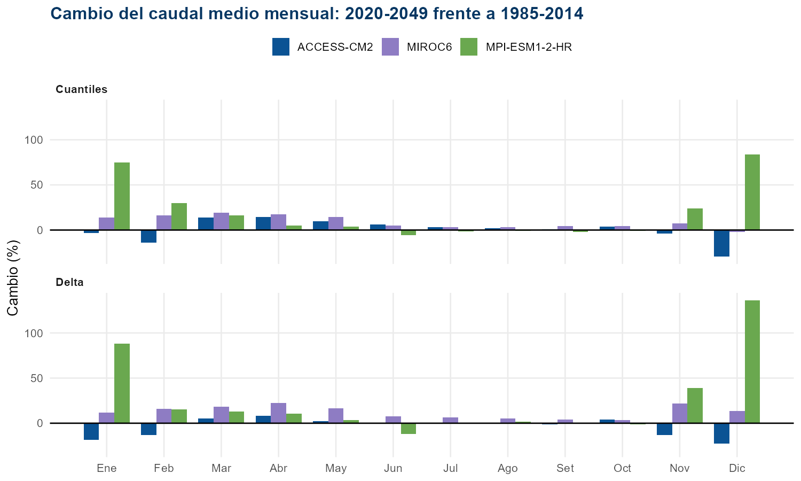
El cambio se concentra en dic–ene, el inicio de la época de lluvias. En estiaje los cambios son pequeños (±6 %).
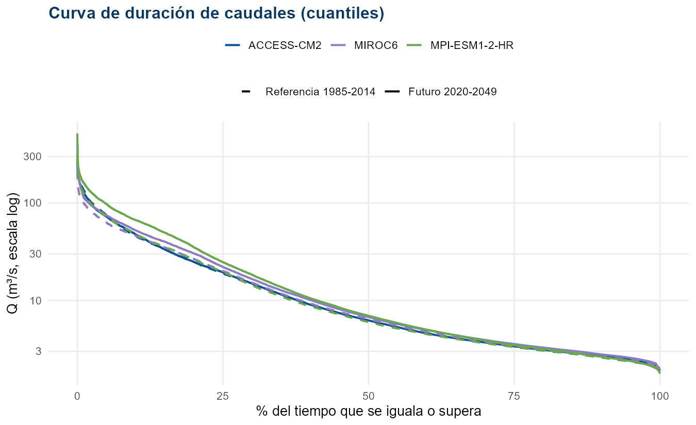
| Q10 | Q50 | Q90 | |
|---|---|---|---|
| ACCESS | 46→47 | 6.2→6.2 | 2.6→2.7 |
| MIROC6 | 46→52 | 6.4→6.7 | 2.7→2.8 |
| MPI | 48→67 | 6.0→6.9 | 2.6→2.6 |
m³/s, referencia → futuro
Los caudales altos (Q10) son los que más cambian; los caudales bajos (Q90) casi no se mueven.
Para un estudio real: más modelos (≥ 10), más escenarios (SSP1-2.6, SSP3-7.0, SSP5-8.5), otros horizontes (2050–2079) y, si se puede, más de un modelo hidrológico.
06
R + Python, recursos y rutas de continuación
Programación en R Aplicada a la Hidrología y Cambio Climático